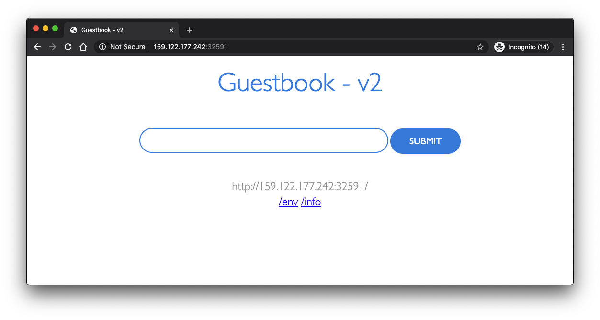
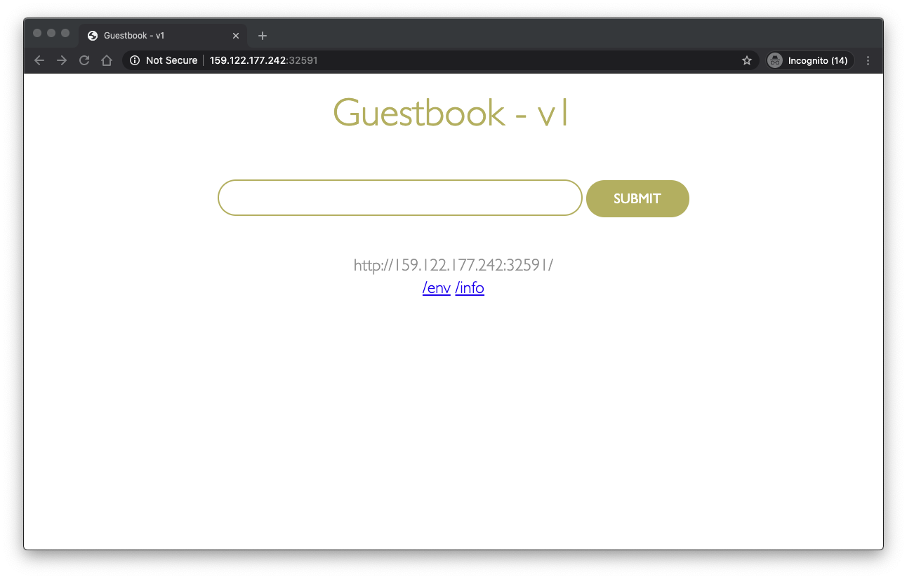

Lab 2: Scale and Update Deployments
In this lab, you'll learn how to update the number of instances a deployment has and how to safely roll out an update of your application on Kubernetes.
For this lab, you need a running deployment of the guestbook application
from the previous lab. If you need to create it, go to Lab 1, step 1.
2. Update and roll back apps
Kubernetes allows you to do rolling upgrade of your application to a new container image. This allows you to easily update the running image and also allows you to easily undo a rollout if a problem is discovered during or after deployment.
In the previous lab, we used an image with a v1 tag. For our upgrade
we'll use the image with the v2 tag.
To update and roll back:
Using
kubectl, you can now update your deployment to use thev2image.kubectlallows you to change details about existing resources with thesetsubcommand. We can use it to change the image being used.kubectl set image deployment/guestbook guestbook=ibmcom/guestbook:v2Note that a pod could have multiple containers, each with its own name. Each image can be changed individually or all at once by referring to the name. In the case of our
guestbookDeployment, the container name is alsoguestbook. Multiple containers can be updated at the same time. (More information.)To check the status of the rollout, run:
kubectl rollout status deployment/guestbookThe rollout might occur so quickly that the following messages might not display:
$ kubectl rollout status deployment/guestbook Waiting for rollout to finish: 2 out of 10 new replicas have been updated... Waiting for rollout to finish: 3 out of 10 new replicas have been updated... Waiting for rollout to finish: 3 out of 10 new replicas have been updated... Waiting for rollout to finish: 3 out of 10 new replicas have been updated... Waiting for rollout to finish: 4 out of 10 new replicas have been updated... Waiting for rollout to finish: 4 out of 10 new replicas have been updated... Waiting for rollout to finish: 4 out of 10 new replicas have been updated... Waiting for rollout to finish: 4 out of 10 new replicas have been updated... Waiting for rollout to finish: 4 out of 10 new replicas have been updated... Waiting for rollout to finish: 5 out of 10 new replicas have been updated... Waiting for rollout to finish: 5 out of 10 new replicas have been updated... Waiting for rollout to finish: 5 out of 10 new replicas have been updated... Waiting for rollout to finish: 6 out of 10 new replicas have been updated... Waiting for rollout to finish: 6 out of 10 new replicas have been updated... Waiting for rollout to finish: 6 out of 10 new replicas have been updated... Waiting for rollout to finish: 7 out of 10 new replicas have been updated... Waiting for rollout to finish: 7 out of 10 new replicas have been updated... Waiting for rollout to finish: 7 out of 10 new replicas have been updated... Waiting for rollout to finish: 7 out of 10 new replicas have been updated... Waiting for rollout to finish: 8 out of 10 new replicas have been updated... Waiting for rollout to finish: 8 out of 10 new replicas have been updated... Waiting for rollout to finish: 8 out of 10 new replicas have been updated... Waiting for rollout to finish: 8 out of 10 new replicas have been updated... Waiting for rollout to finish: 9 out of 10 new replicas have been updated... Waiting for rollout to finish: 9 out of 10 new replicas have been updated... Waiting for rollout to finish: 9 out of 10 new replicas have been updated... Waiting for rollout to finish: 1 old replicas are pending termination... Waiting for rollout to finish: 1 old replicas are pending termination... Waiting for rollout to finish: 1 old replicas are pending termination... Waiting for rollout to finish: 9 of 10 updated replicas are available... Waiting for rollout to finish: 9 of 10 updated replicas are available... Waiting for rollout to finish: 9 of 10 updated replicas are available... deployment "guestbook" successfully rolled outTest the application as before, by accessing
<public-IP>:<nodeport>in the browser to confirm your new code is active.Remember, to get the "nodeport" and "public-ip" use the following commands. Replace
$CLUSTER_NAMEwith the name of your cluster if the environment variable is not set.:kubectl describe service guestbookand
ibmcloud ks workers --cluster $CLUSTER_NAMETo verify that you're running "v2" of guestbook, look at the title of the page, it should now be
Guestbook - v2. If you are using a browser, make sure you force refresh (invalidating your cache).
If you want to undo your latest rollout, use:
kubectl rollout undo deployment guestbookYou can then use this command to see the status:
kubectl rollout status deployment/guestbookWhen doing a rollout, you see references to old replicas and new replicas. The old replicas are the original 10 pods deployed when we scaled the application. The new replicas come from the newly created pods with the different image. All of these pods are owned by the Deployment. The deployment manages these two sets of pods with a resource called a ReplicaSet. We can see the guestbook ReplicaSets with:
$ kubectl get replicasets -l app=guestbook NAME DESIRED CURRENT READY AGE guestbook-5f5548d4f 10 10 10 21m guestbook-768cc55c78 0 0 0 3h
To check the rollback:

Before we continue, let's delete the application so we can learn about a different way to achieve the same results:
To remove the deployment, use
kubectl delete deployment guestbook
To remove the service, use:
kubectl delete service guestbook
Congratulations! You deployed the second version of the app. Lab 2 is now complete. Continue to the next lab of this course.